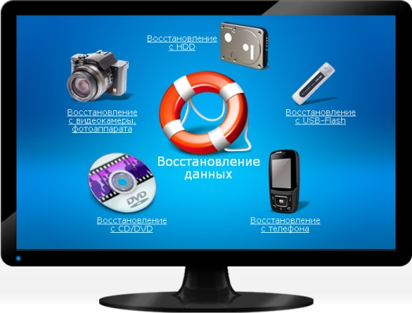
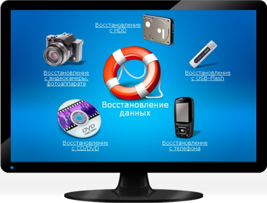

Восстановление информации
Восстановление данные в Усть-Каменогорске возможно в нашем сервисе. Производим восстановление данных как утерянных, так и удаленных, работаем с данными и восстанавливаем с флешек и жестких дисков разных производителей и объемов. Восстановление занимает долгое время, но во многих случаях позволяет вернуть важные для клиента файлы. Во многих случаях, например, когда жесткий диск случайно отформатировали или произошел сбой контроллера на флешке, шанс восстановить данные имеется и его стоит использовать, обращайтесь к нам с технический отдел.
В случае потери информации, мы очень не рекомендуем что-либо пытаться самостоятельно восстановить, т.к. любые непрофессиональные действия обычно приводят к тому, что после этого даже наши специалисты могут не смочь извлечь испорченные или удаленные файлы.

В настоящее время мы оказываем следующие виды работы в этой области:
Обращайтесь к нам уже сейчас, завтра уже может быть поздно. И всегда создавайте копии важных данных!
В случае потери информации, мы очень не рекомендуем что-либо пытаться самостоятельно восстановить, т.к. любые непрофессиональные действия обычно приводят к тому, что после этого даже наши специалисты могут не смочь извлечь испорченные или удаленные файлы.

В настоящее время мы оказываем следующие виды работы в этой области:
- восстановление данных с диска;
- восстановление данных с жесткого диска;
- восстановление данных с флешки;
- восстановление удаленных данных.
Обращайтесь к нам уже сейчас, завтра уже может быть поздно. И всегда создавайте копии важных данных!